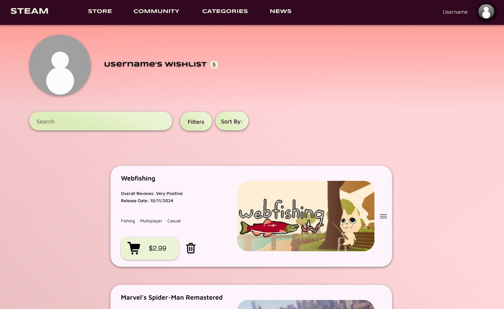

Steam Redesign Case Study
Introduction
Steam, a leading digital distribution platform for video games, is known for its vast library and engaged user base. However, users have voiced concerns over its confusing layouts, inconsistent design elements, and cluttered homepage. This redesign aims to address these issues and create a more cohesive and user-friendly experience.
My Role: User research, wireframing, prototyping, and visual design.
Research & User Insights
User Personas
- Frequent Gamer: Prioritizes updates, news, and game management. Suggested an “Explore Games” section and a personalized dashboard.
- Casual Gamer: Focuses on game discovery and straightforward purchasing. Recommended separating game-related news from platform news.
- Novice User: Values simplicity and clear support resources. Proposed a “Help and Resources” section in the Support area.
Key Findings: Users wanted personalized dashboards, separate news categories, and better integration of community features within the Store.
Positive and Negative Components
Positive
- Diverse game categories for easy discovery.
- Aesthetic game cards that display key information effectively.
Negative
- Confusing content hierarchy on the homepage.
- Inconsistent design of game cards across categories.
Redesign Goals
- Fix the Content Hierarchy: Streamline the homepage layout to prioritize essential information and reduce clutter.
- Organize Categories Effectively: Optimize navigation with a sidebar for key sections like popular games and new releases.
- Redesign the Top Navigation Bar: Improve accessibility and functionality with simplified dropdown menus and visible key features.
Design Process
Wireframes
Low-fidelity sketches illustrating the redesigned homepage and wishlist page.
Color & Typography
Fonts: Primary - Syncopate, Secondary - Maven Pro
Colors:
- Primary: #31081F
- Secondary: #FE5F55
- Tertiary: #FBCAEF
- Alternate: #DCEDB9
Final Designs
The new homepage features a streamlined layout with prominent categories and curated content, reducing cognitive overload.
The wishlist page has a clean, centered layout, accessible via a dropdown menu under the profile picture for a more personal experience.
Reflection
This project taught me the importance of user-centered design and iterative feedback. By addressing user needs and feedback, I was able to create a cohesive and intuitive redesign for Steam, enhancing its usability and appeal.